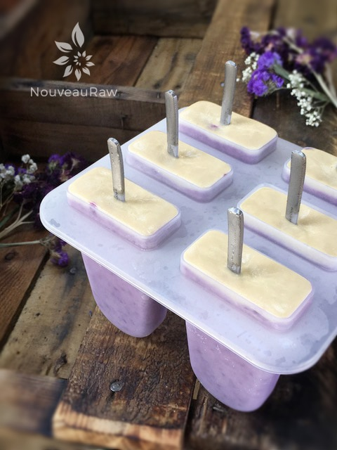
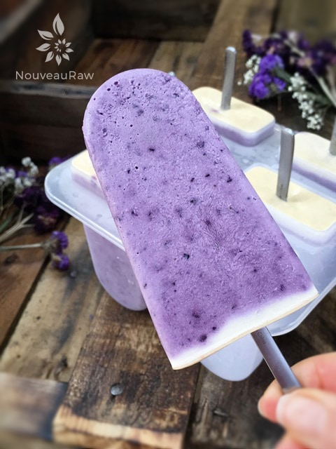
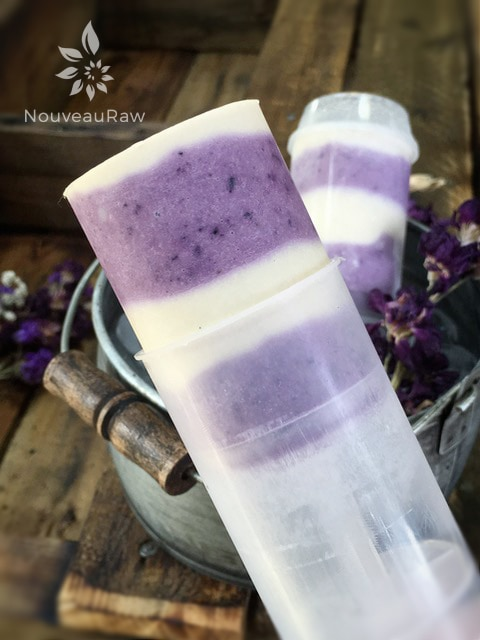
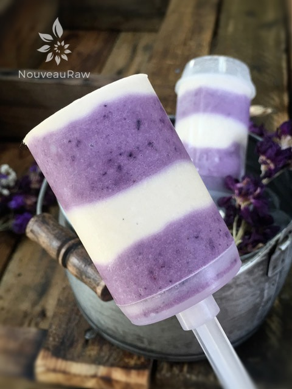

Blueberry Lemon Frosting Ice Lolly

raw / vegan / gluten-free
For my friends in the United Kingdom and Ireland, I hereby name this frozen treat an ice lolly. It’s basically another name for a popsicle but with a twist of sophistication. And visually… these ice lollies appear bit more grown-up to me.
One of the many things that I love about creating raw ice creams is that there are so many beautiful ways to present them. You can, of course, start with the traditional scoop of ice cream placed in a bowl… which is all fine and dandy. Just make sure to choose a bowl that is shallow enough so you can lick it clean.
Actually, I should back up just a tad, and share that I always divide up the ice cream batter so I can make many different forms and shapes. Now, back to the idea of creating scoop-able ice cream. I start there.
I then pull out my assortment of popsicle forms, ahem… I mean, lolly molds and start filling them up. Typically, I select two or maybe four molds. Even though they all hold the same flavored ice cream, they give new excitement every time I pull a different one from the freezer.
When I made these lollies, I ran into a snafu… I had run out of wooden popsicle sticks, so I had to scramble to find a replacement. Once before, when I ran out, I got the bright idea of using straws. LOL, It was indeed a blonde moment. Nothing like having the inner core of the ice cream start to melt, making its way through the handy-dandy escape route provided by a hollowed straw. Oy-vey.
In haste for fear of my ice cream melting, I quickly reached for some spoons and poked them in, slid the molds into the freezer, and called it good. Once frozen, I pulled them out and sat them on the counter. The more I looked at them, the more I fell in love with the visual of all the different spoon handles poking out. Luckily, I have a large stash of assorted silverware.
You see, April 26th, 2012… I let go of my matchy-matchy ways of decorating. Somewhere in our move, our silverware disappeared. I did some shopping hoping to find a set that I liked, but to honest, I was price-tagged-shocked as to how much new silverware cost. So, I left the department stores behind and motored my way to the thrift stores. In the car, I told myself that I wouldn’t spend more than .25 cents per utensil. I have never had so much fun purchasing silverware before. When I used to buy new sets, I always felt torn over what pattern to get because I liked so many. Now I found myself in a position of owning every style, shape, size, and quality for a quarter each!
It’s been over four years since shifting my perspective on eating utensils, and every time we reach for a fork, spoon, or knife, we find ourselves selecting the perfect style that is fitting for that moment and dish. I love our eclectic one of a kind set of silverware.
yields 6 cups batter = 14 popsicles
- 2 3/4 cups raw Brazil or almond milk
- 2 1/2 cups fresh, young Thai coconut meat
- 1/3 cup raw agave nectar or maple syrup
- 1 Tbsp raw yacon syrup
- 1 Tbsp raw honey
- 2 tsp vanilla extract or 1 vanilla bean pod, seeds only
- 2 Tbsp raw cold-pressed coconut oil
- 1/4 tsp Himalayan pink salt
- 2 cup frozen blueberries, thawed
- 1 cup Lemon Vanilla Frosting
Preparation:
- In a high-speed blender, combine the milk, coconut, sweeteners, vanilla, coconut oil, salt, blueberries, and frosting. Blend until nice and creamy.
- Due to the volume and the creamy texture that we are going after, it is essential to use a high-powered blender. It could be too taxing on a lower-end model.
- Blend until the filling is creamy smooth. You shouldn’t detect any grit. If you do, keep blending.
- This process can take 2-4 minutes, depending on the strength of the blender. Keep your hand cupped around the base of the blender carafe to feel for warmth. If the batter is getting too warm, stop the machine and let it cool. Then proceed once cooled.
- When creating lollies, you can use any popsicle mold that you have on hand. As you can see, I made two different ones.
- For the push-pops – I alternated the blueberry batter with the lemon frosting.
- For the regularly shaped lollies, I poured the blueberry batter into the mold first and then added some of the frosting at the very end.
- Slide into the freezer, and once solid, enjoy!
- Eat within one-three months.
- Freeze in popsicle molds or 3 oz Dixie cups with a popsicle stick inserted. Always use plastic Dixie cups, the paper ones stick, and you have to tear them off of the ice cream.
-
- Store in the very back of the freezer, as far away from the door as possible. Every time you open your freezer door, you let in warm air. Keeping these treats way in the back and storing it beneath other frozen-sold items will help protect them from those steamy incursions.
- Ice cream is full of fat, and even when frozen, fat has a way of soaking up flavors from the air around it—including those in your freezer. To keep your frozen treat from taking on the odors, use a container with a tight-fitting lid.




© AmieSue.com